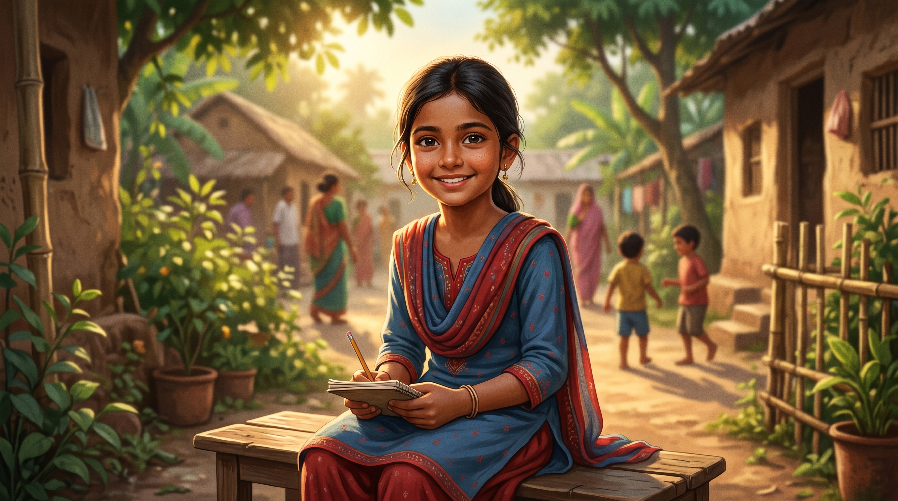
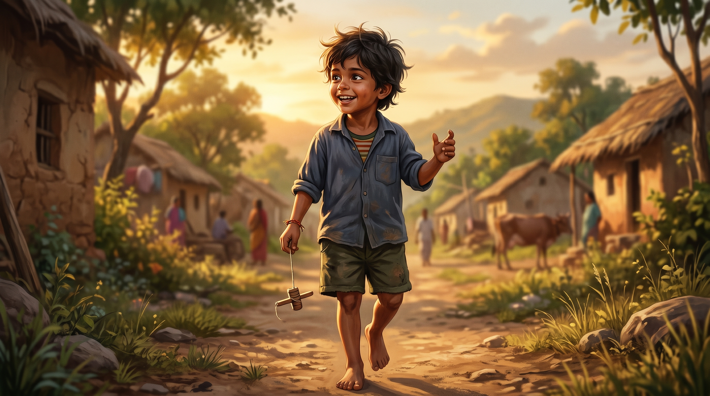
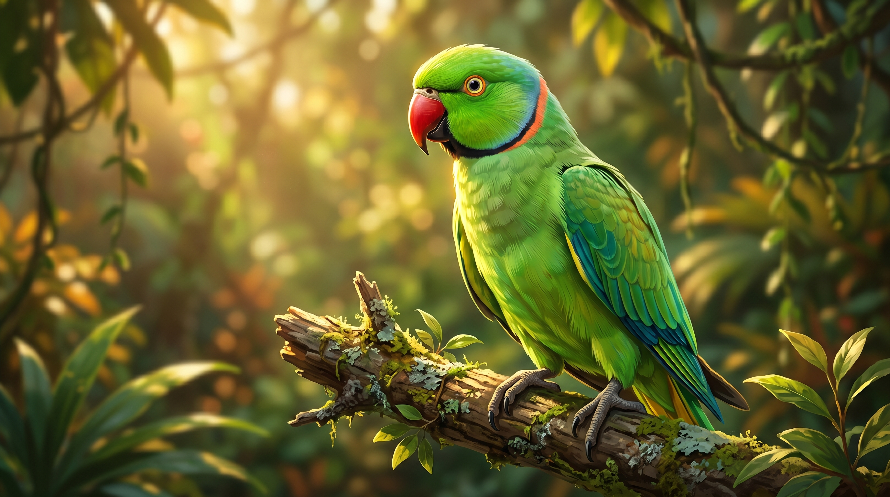

The LeaderMina
Confident, curious, and gentle. The girl who asks the questions a village forgets to ask.
A semi-realistic, cinematic retelling of Bangladesh's most beloved cartoon — where a girl, her brother, and a clever parrot still teach a village to listen.

Mina was never just a cartoon. She was a quiet revolution drawn for South Asian children — and her story is still being told, only now in human form.
UNICEF Bangladesh, with regional support, conceives a children's character to advance girls' education and child rights across South Asia.
The first episode airs. A nine-year-old village girl, her younger brother Raju, and a clever parrot named Mithu enter living rooms across Bangladesh, India, Nepal, and Pakistan.
Episodes tackle gender equality, school attendance, hygiene, and child marriage — wrapped in stories children actually want to watch.
This portfolio reintroduces Mina, Raju, and the village in semi-realistic human form — the same heart, a new register, for a new generation.
Hover to meet each one. Same souls — rendered in a register closer to memory than to drawing.

The LeaderConfident, curious, and gentle. The girl who asks the questions a village forgets to ask.

The SparkMina's younger brother. Mischievous, devoted, and the first to laugh at her jokes — even the bad ones.

The VoiceThe parrot who repeats only what matters. A small creature with the village's sharpest memory.
 The Village
The Village
The chorus that learns alongside her — fathers, mothers, neighbors, the slow turning of an entire community.
Mina's stories were short. The change they sparked was not. Generations of South Asian children grew up knowing their voice mattered — because hers did first.

Episodes that asked an entire generation: why should only one of these children go to school?
Stories about being heard, being safe, being chosen — tucked into a quarter-hour of joyful animation.
Hygiene. Marriage. Dowry. Conversations a village had never had — sparked by a girl with a bindi and a smile.
A visual showcase — reference compositions and human-form renderings of the world Mina lives in.
Sunset Walk
 The Village School
The Village School
Mina taught a continent that a girl with a question is more powerful than a village without one. This portfolio is a small thank-you — and an invitation to keep retelling her story in whatever register the next generation needs.